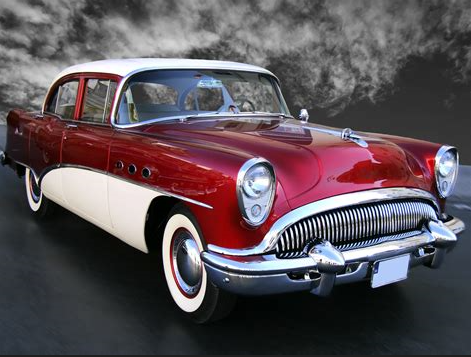

ავტომობილი (ავტო... და ლათ. mobilis — „მოძრავი“) — ძრავიანი თვითმავალი ეტლი, რომელსაც აქვს ორზე მეტი თვალი (თვლებთან ერთად შეიძლება ჰქონდეს მუხლუხები ან თხილამურები), გადაჰყავს მგზავრები და გადააქვს ტვირთი. პირველი თვითმავალი ეტლის იდეა ეკუთვნის ლეონარდო და ვინჩის. 1515 წელს მან მთავრობას წარუდგინა სამხედრო მიზნებისათვის განკუთვნილი თვითმავლის პროექტი, რომლის მიხედვითაც თვლები უნდა აემოძრავებინა წინასწარშეკუმშულ ზამბარას. 1689 წელს ი. ნიუტონმა დაამუშავა ორთქლის 1337 ქვაბიდან წნევით გამომავალი ორთქლის ჭავლის რეაქტიული პრინციპით მოქმედი თვითმავალი ეტლის პროექტი. ეს პროექტები თავის დროზე არ განხორციელებულა (მათში წამოყენებული პრინციპები გამოყენებულია ჩვენი დროის ბევრ სატრანსპორტო მანქანაში).
